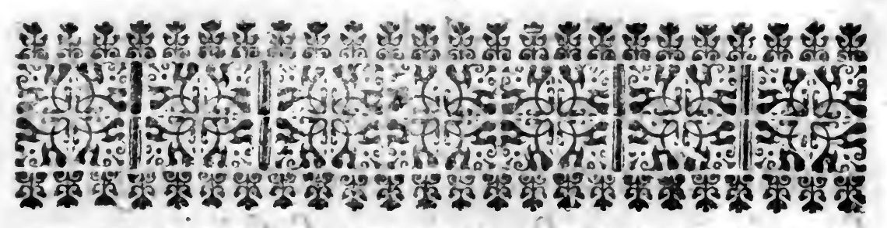

Prooemium ad Lectorem¶


PROOEMIVM.
Consideranti mihi saepius in hac vicissitudine rerum, ac fortunarum, quam opportunum foret calamitatum leuamen philosophari, quamque ij felices demum, fortunatique habendi essent, quos ab otio scientiarum nulla auocant, atque seiungunt curae; subijt animum, erigere (quantum fas esset) literis, ingenioque territam infortunijs adolescentiam meam. Itaque geometriam ingressus, quae & rerum varietate, & genere ipso caeteris anteire visa est, cum Apollonij, Archimedis, Pappi, aliorumque inuenta egregia, atque miranda percellerent animum, raperentque (vt est praeceps sine consilio iuuentus) libuit dare vela ventis, si fortè noua littora, & nemini hactenus cognitas regiones casus aliquis aperiret. Quadraturam circuli, & adhuc indomitam
f. 0016 · p. Prooemium [f. ✠4r]hyperbolam rimari coepi; videlicet spem fecerant haud exiguam frustum cylindricum, solidumque hyperbolicum totum penè à me in pyramidem coactum. Ter mihi conciliata recti, et curui dissidia insomnes noctes persuasere; ter normam fugit figura contumax, et tenax sui. Tamen, vt frustratis semel, iterumque laboribus lux aliqua, spesque noua subinde oriebatur, tandiu relabenti saxo Sisyphus peruicax inhaesi, donec adhibita nouissimè irrito successu indiuisibilia Cauallerij omnem animi pertinaciam domuere. Ergo auocato hinc animo (neque enim sine altiori consilio positum hoc fraenum humanis mentibus crediderim) geometricis, ac mecanicis rationibus iunctis inuicem, permixtisque, nouum quidpiam in lucem proferre concessit Deus, solatium aliquod delusi in rebus magnis ingenij. Namque consuetis geometriae apparatibus relictis, substitutisque linearum vice ponderibus, dum rationes quasdam examino successit cogitatio, pluraque sepulta hactenus, atque ignota prodiere in lucem. Rei nouitas, atque vtilitas persuasit hoc qualecunque inuentum publici iuris facere, ratus aliorum ingenio, ac perspicacia (vt saepe fit) rude, impolitumque initium perfectum iri.
f. 0017 · p. Prooemium [f. ✠4v]Institutum nostrum est problemata quamplura, quorum ardua, & saepe etiam inextricabilis foret solutio iuxta consuetas leges, nulla adhibita circulorum, linearumque praeuia constructione, vt mos est apud geometras, solis ponderibus staticè enodare; quod praestabimus, quoties proponantur lineae se inuicem secantes, quarum sectiones ita sint determinatae, vt qualibet variata, caeteras omnes variari necesse sit. Hinc staticam constructionem libuit appellare, quae vtinam eius emolumenti sit, compendijque quod mihi persuadeo, & quod vnum oro, cupioque. Neque enim ad haec scribenda cupiditas vlla famae impulit, quam in tanta rerum, auctorumque celebritate insani esset quaerere, leuiorisque animi desiderare. Plura inuenies minus castigata, et quibus desit suprema manus; da veniam succisiuis horis, quas mihi ad haec elaboranda vix reliquere, partim curae seueriores, partim etiam amicorum, et familiarium querimoniae malè in his collocatum iuuentutis florem existimantium. Si quid porrò haud omnino contemnendum fuerit, Donato Rossetto inter Mathematicos nostri aeui egregio, praestantissimoque, cuius primis institutionibus, si quid in me est bonarum artium, debeo, tu quoque humanissime lector debes. Vale.